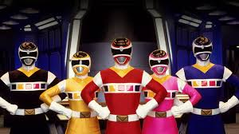

Sobre a Temporada
Power Rangers no Espaço foi ao ar em 1998 e é amplamente reconhecida como uma das melhores temporadas. A série acompanha os Rangers enfrentando Astronema e a busca por Zordon em uma batalha épica entre o bem e o mal.
Rangers Principais
- Ranger Vermelho: Andros
- Ranger Azul: T.J.
- Ranger Amarela: Ashley
- Ranger Rosa: Cassie
- Ranger Preto: Carlos